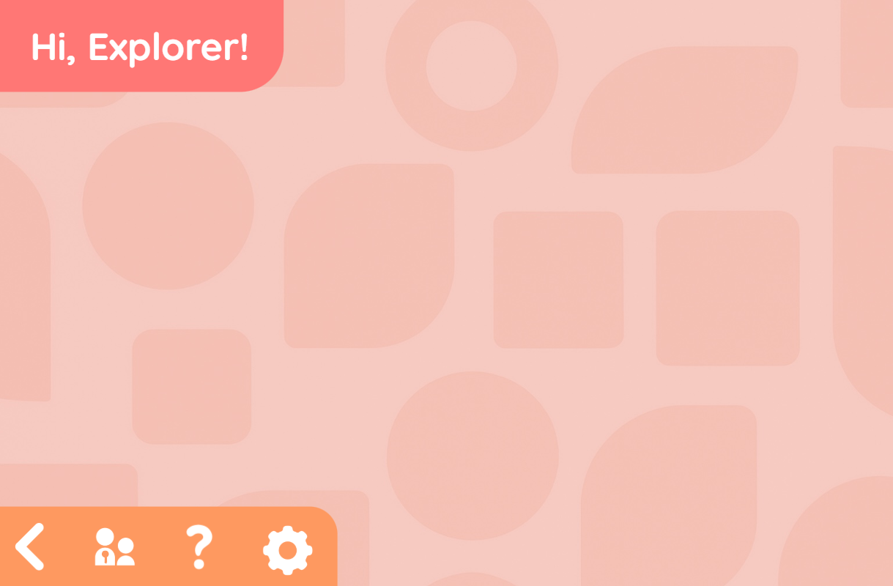

Project Overview
Explorer is a tablet application designed for children to explore animals, trees and wildlife in nature. Developed as the final year COMP1649 Human Computer Interaction and Design coursework at the University of Greenwich, the project addresses a growing concern — children's increasing disconnect from the natural world — by transforming screen time into a meaningful learning opportunity.

Click a section to jump straight to it.
The prototype was built in Axure RP 11 following extensive research in Child-Computer Interaction (CCI), HCI theory, and visual design principles for young users. Rather than scaling down an adult interface, the design was built from the ground up around how children actually think, navigate, and respond — prioritising recognition over recall, vibrant harmonised colours, large touch targets, mascot-guided instructions, and gamification elements like achievements and checklists to sustain engagement.
The app features three core sections for child users — Learn & Explore, Start Adventure, and My Library — alongside a Parental Control dashboard for caregivers to monitor activity, track location check-ins, and review route history.
Explore the App
Step 1 — Learn & Explore
Learn & Explore is the core learning feature of Explorer, giving children access to the Animal Library — a scrollable list of animals and trees with real photos, fun facts, safety markers (Safe, Be Careful, Dangerous), and interactive quizzes. Children can take photos or record audio outdoors using the camera and microphone features, with the app then attempting to identify the captured species. The mascot Stan guides children step by step through each interaction, providing clear speech-bubble instructions to reduce confusion and build confidence.
Step 1 — Start Adventure
Start Adventure takes the Explorer experience outdoors. Children can view an interactive map showing their current location alongside suggested safe wildlife habitats — Wetland, Bird, and Elephant habitats — colour-coded for easy recognition. A route tracking feature records the child's adventure path with distance, time, and a live map preview saved to Route History. A real-time weather forecast page helps children and parents plan outings safely, showing weekly conditions with a child-friendly activity suggestion.
Step 1 — My Library
My Library is the child's personal collection hub. Photos and audio recordings saved from explorations are stored in a gallery, each tagged with the date and location of capture. An Animal and Tree Checklist lets children mark off species they've spotted in the wild, with rarity levels (Common, Rare, Super Rare, Very Rare, Legendary) adding a gamification layer that encourages continued exploration. Achievements such as Fresh Learner, Junior Explorer, and Navigator are unlocked through app activity, displayed on a virtual trophy shelf to motivate learning.
Reflection
This project significantly deepened my understanding of designing for non-standard user groups. The most important takeaway was that children are not a simplified version of adult users — they require fundamentally different design thinking. Research showed that children apps require the most thorough setup processes, not the least, in order to ensure child safety and personalised learning experiences, which challenged my initial assumptions.
Applying HCI theories such as Don Norman's Design Principles, the Five Dimensions of Interaction Design, and the Gestalt Principles gave the prototype a strong theoretical foundation. Practical techniques like the 8-point grid system, the border-radius nesting formula, and a harmonised vibrant colour palette (rather than the conventional 60-30-10 rule) were direct outcomes of the research, each contributing to a more polished and child-appropriate result.
In future iterations, I would incorporate real audio dialogue for the mascots rather than speech bubbles, and introduce animated mascot movements to make the experience more dynamic. Implementing live weather and geolocation APIs in a real mobile build would also bring the prototype's most compelling features — the adventure map and species identification — to life.